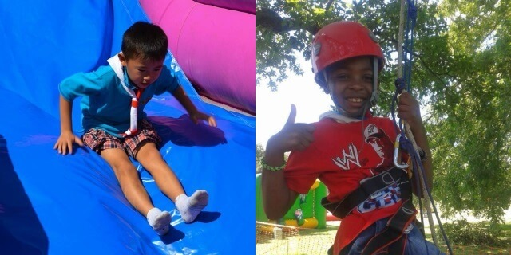

The Beaver leader is: Peter (Rama).
In Beavers we believe that fun, friendship and adventure are what matter most. If you enjoy being creative, playing games, going on visits and discovering the world around you then you'll love what we do!
Take a look at this term's programme:
Certain badges can be fully or partially completed outside of the weekly meetings. Click to download the worksheet then print out, fill in and return to a leader to earn your badge.
View your child's progress in Beavers at My.SCOUT. This is a webpage where you can see which badges have been earned and sign up for trips! Ask a leader for more details and a sign up email.
